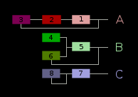
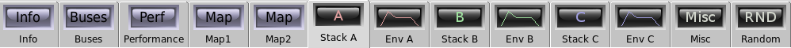
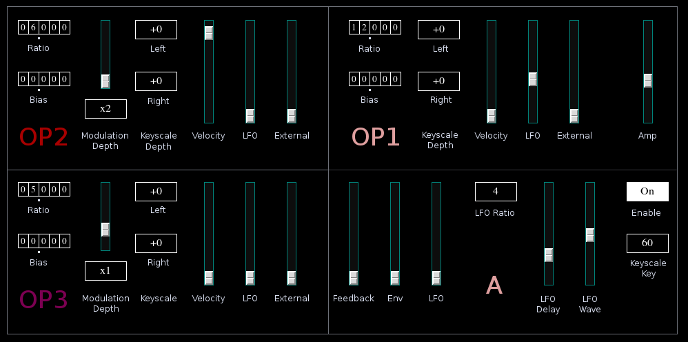
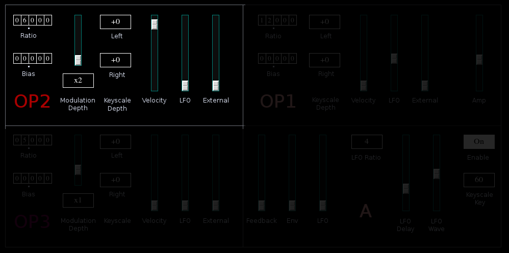
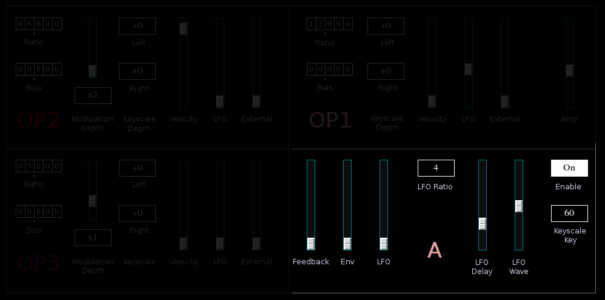
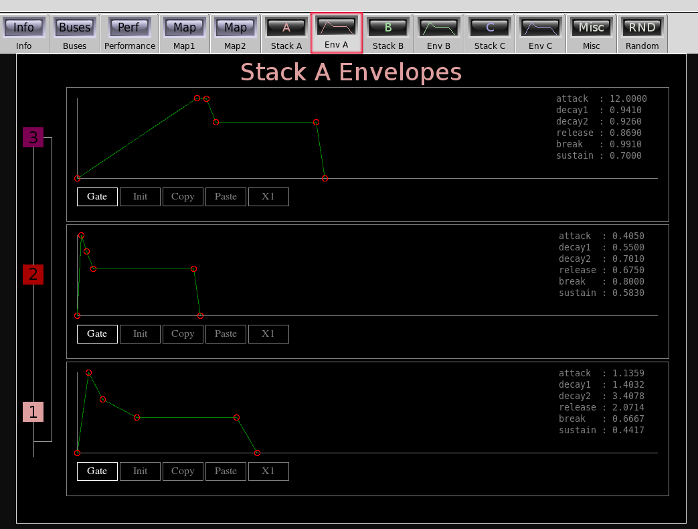
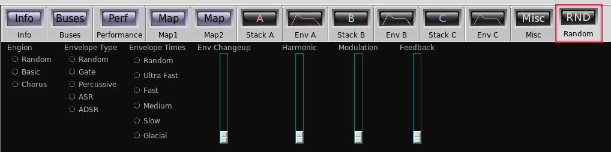

Algo
 Previous( Synth Catalog )
Next( Corvus )
Home
Contents
Synth Catalog
Previous( Synth Catalog )
Next( Corvus )
Home
Contents
Synth Catalog
Algo is an 8 operator FM synth, divided into three "stacks": A, B and C.
The editor contains 8 Algo specific tabs, 2 per stack, 1 for general miscellaneous parameters, and 1 for the random program generator.
The parameters for each stack are identical, though the effects they have are dependent on the specific stack.
The two left quadrants always contain controls for the stack modulators. The upper right quadrant is the carrier, and below this are general stack controls.
Modulator controls:
- Ratio tumbler, Modulator frequency ratio
- Bias tumbler, A fixed value added to the operator frequency.
- Modulation depth slider
- Modulation depth scale (msb button) sets
sensitivity of the depth slider.
Scale factors x1 and x2 are typical values for FM synthesis, higher values can produce extreme modulation depth. - Left and right keyscale depth buttons. These buttons set an amplitude scaling
factor based on the key played.
The reference key is identical for all operators in a stack and is set by the "Keyscale Key" button in the general section.
keyscale values are in db/octave. It is common to use positive values on the left to brighten bass notes
and negative values on the right to reduce brightness of high notes. - Velocity slider sets sensitivity of the operator to key velocity.
- LFO slider, the amount of LFO modulation applied to operator amplitude.
- External slider, the amount of external control signal applied to operator amplitude.
Carrier controls:

The carrier controls are nearly identical to the modulators. The modulation depth controls are replaced with an amp volume slider
General stack controls:
The general stack controls are identical for each stack, though their effect may be different.
- Feedback slider, sets a fixed stack feedback. Each stack uses feedback in a different way.
- Env slider, applies envelope to feedback depth.
- LFO slider, applies LFO to feedback depth.
- LFO ratio button. Each stack has a dedicated LFO. This button sets the frequency ratio of
of the stack LFO relative to the vibrato LFO. - LFO Delay slider
- LFO Wave slider, The stack LFOs produce a waveform continuously variable between
sawtooth and triangle.
The waveform is more triangular near the center and more sawtooth at the extremes.
The sawtooths have opposite slopes at opposite ends of the slider. - Enable button, enable stack output.
- Keyscale key, reference key number for key scale feature. Middle C is 60
Each operator has a dedicated ADDSR envelope.
The Misc tab contains general parameters.

- Portamento, (not available for Poly1 keymode)
- LFO Frequency tumbler. Sets frequency for primary vibrato LFO.
The stack LFO frequencies are relative to this value. - Vibrato Delay
- Vibrato Sensitivity
- Vibrato Depth, programmed vibrato depth applied after onset delay
- External control signal applied to pitch.
- Modulation Depth. Master control over all modulator depths.
- Modulation External. Amount of external control signal applied to modulation depth.
- External Scale, scale factor applied to external control signal.
- Output amp
The Rnd tab contains controls that influence the random program generator.
There are actually two algo program generators; basic and chorus. The chorus generator is more likely to have at least one carrier where the frequency ratio is 0.00 and the bias is some value below 10Hz. With a high enough modulation ratios this produces a unique chorusing effect.
- Engine, select generator
- Envelope type and Envelope times, provide hints as to the type of envelopes to produce.
- Env Changeup slider. Sets probability that envelopes will deviate from the selected types/times.
- Harmonic slider. Sets probability that only harmonic frequencies are used.
- Modulation slider. Sets probability of high modulation depths.
- Feedback slider. Sets probability of stack feedback.
Buses: Algo has 4 audio output buses and one control input.
- outbus - primary output combines all three stacks.
- outbusA - stack A output.
- outbusB - stack B output.
- outbusC - stack C output.
- xbus - external control input
Parameters:
General parameters:- modDepth - Global modulation depth (0.0 ... 1.0)
- amp - Output amplitude (0.0 ... 2.0)
- lfov_freq - Primary (vibrato) LFO frequency (0.0 ... 99.999)
- lfov_delay - Vibrato onset delay (0.0 ... 4.0) seconds
- vsens - Vibrato sensitivity (0.0 ... 1.0)
- vdepth - Vibrato depth (0.0 ... 1.0)
- xscale - External control signal scale (0.0 ... 2.0)
- xpitch - External control to pitch (0.0 ... 1.0)
- xmod - External control to global modulation depth (0.0 ... 1.0)
- stack?_key - keyscale reference key as MIDI key number (0,1,2,...,127)
- stack?_feedback - stack feedback amount (0.0 ... 2.0)
- stack?_env_feedback - envelope applied to feedback (0.0 ... 2.0)
- stack?_lfo_feedback - LFO applied to feedback (0.0 ... 2.0)
- stack?_enable - Stack enable (0|1)
- lfo?_ratio - LFO frequency relative to vibrato LFO
(1/8, 1/4, 3/8, 1/2, 5/8, 3/4, 7/8, 1, 5/4, 4/3, 3/2, 7/3, 7/4, 2, 5/2, 3, 4, 5, 6, 8, 9, 12,16) - lfo?_delay - LFO onset delay (0.0 ... 4.0)
- lfo?_wave - LFO wave (0.0 ... 1.0) 0.5 = triangle
- op?_ratio - frequency ratio (0.0 ... 99.999)
- op?_bias - frequency bias (0.0 ... 99.999)
- op?_attack - attack time (0.0 ... 12)
- op?_decay1 - initial decay time (0.0 ... 12)
- op?_decay2 - second decay time (0.0 ... 12)
- op?_release - release time (0.0 ... 12)
- op?_breakpoint - envelope breakpoint (0.0 ... 1.0)
- op?_sustain - envelope sustain level (0.0 ... 1.0)
- op?_envmode - envelope mode (0|1) 0 = gate, 1 = trig
- op?_amp - carrier amplitude (0.0 ... 2.0)
- op?_left_scale - left key scale in db/octave (-18,-12,-9,-6,-3,0,+3,+6,+9,+12,+18)
- op?_right_scale - right key scale in db/octave (-18,-12,-9,-6,-3,0,+3,+6,+9,+12,+18)
- op?_velocity - carrier velocity sensitivity (0.0 ... 1.0)
- op?_lfo - stack LFO applied to carrier amp (0.0 ... 1.0)
- op?_external - external control applied to carrier amplitude (0.0 ... 1.0)
- op2_ratio - frequency ratio (0.0 ... 99.999)
- op2_bias - frequency bias (0.0 ... 99.999)
- op2_attack - attack time (0.0 ... 12)
- op2_decay1 - initial decay time (0.0 ... 12)
- op2_decay2 - second decay time (0.0 ... 12)
- op2_release - release time (0.0 ... 12)
- op2_breakpoint - envelope breakpoint (0.0 ... 1.0)
- op2_sustain - envelope sustain level (0.0 ... 1.0)
- op2_envmode - envelope mode (0|1) 0 = gate, 1 = trig
- op2_amp - modulation depth (0.0 ... 1.0)
- op2_mod_scale - modulation depth scale 10**(1,2,3,4,5,6)
- op2_left_scale - left key scale in db/octave (-18,-12,-9,-6,-3,0,+3,+6,+9,+12,+18)
- op2_right_scale - right key scale in db/octave (-18,-12,-9,-6,-3,0,+3,+6,+9,+12,+18)
- op2_velocity - modulation velocity sensitivity (0.0 ... 1.0)
- op2_lfo - stack LFO applied to modulation depth
- op2_external - external control applied to modulation depth
Previous( Synth Catalog ) Next( Corvus ) Home Contents Synth Catalog